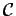
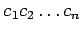
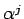
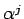

Inhalt Index DeskTop Bronstein

 Algebra und Diskrete Mathematik Elementare Zahlentheorie Codierungen Fehlerkorrigierende Codes
Algebra und Diskrete Mathematik Elementare Zahlentheorie Codierungen Fehlerkorrigierende Codes


Die zyklischen Codes sind die am besten untersuchten Linearcodes; sie erlauben eine effiziente Codierung und Decodierung.
Ein (binärer) (n,k)-Linearcode  heißt zyklisch, wenn für alle  gilt:
| Beispiel |
|
ist ein zyklischer (3,2)-Linearcode. |
Um effizient mit zyklischen Codes arbeiten zu können, stellt man deren Codewörter durch Polynome vom Grad mit Koeffizienten aus dar:
| (5.292) |
Ein (binärer) (n,k)-Linearcode ist genau dann zyklisch, wenn für alle c(x) gilt:
| (5.293) |
Einen zyklischen (n,k)-Linearcode kann man durch Generatorpolynome und Kontrollpolynome wie folgt beschreiben. Das Generatorpolynom g(x) vom Grad ist ein Teiler von xn -1. Das Polynom h(x) vom Grad k mit g(x)h(x) =xn -1 wird Kontrollpolynom genannt. Die Codierung von  in Polynomdarstellung a(x) erfolgt durch
in Polynomdarstellung a(x) erfolgt durch
| (5.294) |
d(x) ist genau dann ein Element des Codes, wenn das Generatorpolynom g(x) ein Teiler von d(x) ist, und genau dann, wenn für das Kontrollpolynom h(x) die Bedingung erfüllt ist.
Eine besonders wichtige Klasse von zyklischen Codes sind die BCH-Codes, weil man sich dabei eine untere Schranke  für den Minimalabstand und damit eine untere Schranke für die Fehleranzahl vorgeben kann, die der Code korrigieren soll. Dabei wird
für den Minimalabstand und damit eine untere Schranke für die Fehleranzahl vorgeben kann, die der Code korrigieren soll. Dabei wird  die Entwurfsdistanz des Codes genannt.
die Entwurfsdistanz des Codes genannt.
Ein (binärer) (n,k)-Linearcode ist ein BCH-Code mit Entwurfsdistanz  , wenn für sein Generatorpolynom g(x) gilt:
, wenn für sein Generatorpolynom g(x) gilt:
| (5.295) |
wobei  eine primitive n-te Einheitswurzel und b eine ganze Zahl ist. Die Polynome sind Minimalpolynome von .
eine primitive n-te Einheitswurzel und b eine ganze Zahl ist. Die Polynome sind Minimalpolynome von .
Für einen BCH-Code mit Entwurfsdistanz  gilt .
gilt .